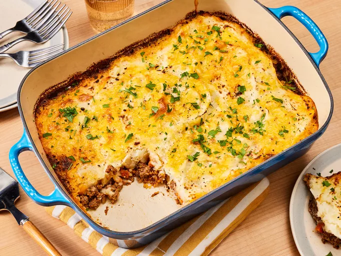

English Cottage Pie

This cottage pie has a flavorful layer of savory ground beef and
veggies topped with fluffy mashed potato and
cheese for a comforting dinner the whole family will love!
Ingredients
- 1 pound lean ground beef
- 1 onion, diced
- 3 carrots, diced
- 2 tablespoons all-purpose flour
- 1 tablespoon Italian seasoning
- ½ teaspoon ground cinnamon (Optional)
- 2 tablespoons chopped fresh parsley
- 1 ½ cups beef broth
- 1 tablespoon tomato paste
- salt and pepper to taste
- 4 potatoes, peeled and diced
- 1 cup milk
- ¼ cup butter, softened
- ¼ pound shredded Cheddar cheese
Cooking Steps
- Heat a large skillet over medium-high heat.
Cook and stir ground beef in the hot skillet until browned and crumbly,
5 to 7 minutes. Add onion and carrot; cook and stir until onion has softened,
about 5 minutes. Mix in flour, Italian seasoning,
and cinnamon. Stir in parsley.
- Combine beef broth and tomato paste together in a jug; add to beef mixture.
Season with salt and pepper; lower heat and simmer for 15 minutes,
stirring occasionally, until slightly thickened.
Preheat the oven to 400 degrees F (200 degrees C).
- Meanwhile, place diced potatoes in a medium saucepan;
cover with water and place over high heat.
Bring to a boil and simmer until potatoes are tender,
about 15 minutes; drain. Mash potatoes until smooth,
then add milk and butter; whip until fluffy.
Season with salt and pepper.
- Spoon ground beef mixture into a 9x13-inch baking dish;
spread mashed potatoes on top and sprinkle with grated Cheddar cheese.
- Bake in preheated oven until top is browned and cheese is bubbly, about 25 minutes.
- Serve and enjoy